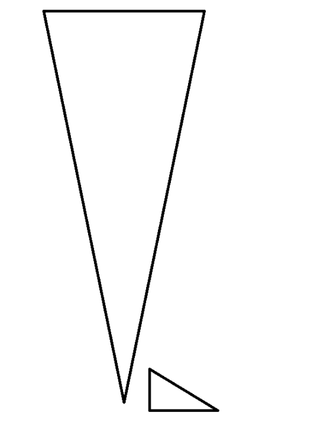
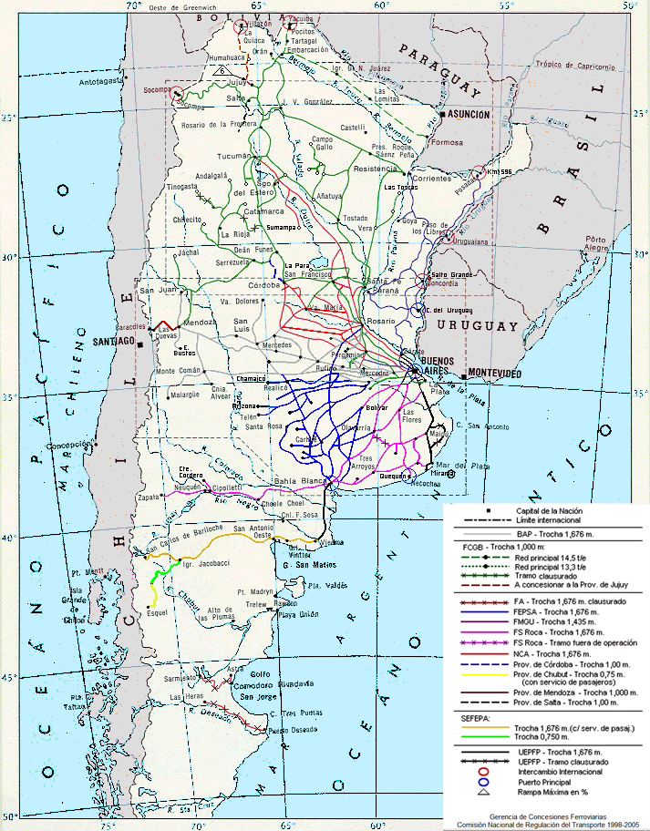

Extensión (pico histórico)
~47.000–48.000 km (mediados del siglo XX). La red llegó a abarcar buena parte del territorio, integrando economías regionales con puertos como Buenos Aires, Rosario y Bahía Blanca.

Ferrocarriles Argentinos
De La Porteña (1857) a la nacionalización de 1948, los ciclos de expansión, cierres y reactivaciones: historia, protagonistas y hitos de una red que conectó puertos, ciudades y economías regionales.
~47.000–48.000 km (mediados del siglo XX). La red llegó a abarcar buena parte del territorio, integrando economías regionales con puertos como Buenos Aires, Rosario y Bahía Blanca.
Bautizadas con próceres; integraron redes de trocha ancha, media y angosta.
La convivencia de múltiples trochas (ancha, media, angosta) generó transbordos y costos logísticos; aún así permitió capilaridad y penetración territorial.
Me llamo Ramón y descargué bolsas de maíz toda mi juventud en la estación del pueblo. Cuando silbaba la locomotora, sabíamos que el día iba a ser largo y el jornal, seguro. Las vías iban derechito al puerto: Buenos Aires, Rosario, Bahía Blanca. Los ingleses mandaban en los relojes y en los fletes; nosotros poníamos el lomo. Igual, alrededor del andén crecieron almacenes, herrerías y hasta una panadería. El tren nos ataba al mundo: si el vagón salía a horario, el pueblo comía. Si no, se hacía sentir en cada mesa.
Soy Marta, tornera en una metalúrgica de Avellaneda. Mi día empezaba con el tren lleno: mate en mano, charlas cortas y el vaivén hasta la fábrica. El ferrocarril ya no miraba solo al océano: respiraba al ritmo de las sirenas y los talleres. Aprendimos oficio en los talleres ferroviarios; el Estado era patrón y escuela. A la tarde, el mismo tren nos devolvía a casa con la compra y el cansancio. La ciudad se estiró por las vías, los barrios crecieron, y el salario viajó en coche motor hasta la góndola.
Me dicen Fabián. Fui boletero hasta que cerró la estación. El último servicio lo despedimos con aplausos y un nudo en la garganta. Conseguí changas de chofer: la ruta estaba lisa, el camión apuraba y el flete por pavimento ganaba. Pero el pueblo quedó quieto: telégrafo apagado, reloj parado, la explanada en silencio. Donde había riel quedó maleza; donde había horario, incertidumbre. Aprendí a manejar de noche, pero todavía sueño con aquel andén encendido en invierno.
I’m Alex, ingeniero logístico británico, y vine a trabajar con equipos locales. No buscamos volver al pasado, sino hilar fino: material rodante nuevo en el AMBA, señalamiento, estaciones seguras; y para cargas, integrar ferrocarril con puertos y la hidrovía. Hacemos números: dónde el tren gana por volumen y distancia, cómo recuperar puntualidad y confianza del pasajero. Argentina escribe el futuro del riel por tramos: reabrir un ramal, medir desempeño, ajustar operación. Tenemos muchas ganas de que el silbato vuelva a significar “llegamos”.